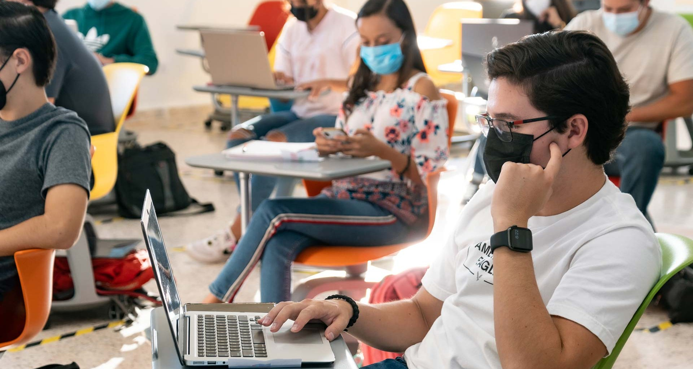

Bienvenidos a esta pagina web donde encontraras información de las entidades educativas su procesos de manejo del Covid 19
El Covid-19 y Su impacto en la educacion superior
Según estimaciones de la UNESCO, mas de 1.500 millones de estudiantes de 165 países, estos no podrán así seguir sus estudios o enseñanza debido al Covid-19.
Esto conllevo a que la pandemia obligo a la comunidad académica internacional a explorar nuevas alternativas de estudio o formas de enseñar y aprender,
como la educación a distancia y en línea. Esta situación ha sido difícil a estudiante como a docentes, enfrentando los problemas emocionales, físicos y
económicos causado por la pandemia. También complicando la poca conectividad de los hogares según Unesco un 45 % de los hogares cuenta con interne fijo,
mientras que las zonas rurales cuentan con una cobertura mínima o bajo en Latinoamérica y en el caribe.

Ambito educativo docente
En el ámbito de la pedagogía esta se empiezan a amoblar a las necesidades o adaptaciones pedagógicas han sido fundamental, ya que en los modelos
tradicionales de presencialidad no se amoblarán a un entorno de aprendizaje a distancia.
Las adaptaciones a entornos educativos por medio de distintas trasformaciones entre estas podemos destacar (radio, televisión, móviles, plataformas virtuales, etc.), los docentes tenían que adaptar sus practicas
y recurriendo a la creatividad de estos para ir cautivando y mantener cautivando su atención de los estudiantes, esto que las aulas de clase se trasladaban
a los hogares y convertirla en aula sin un entorque agradable o que apoye el aprendizaje.
La pandemia ha causado que los docentes enfrente cambios en la distribución de su tiempo para la enseñanza, tanto el compromiso del estudiante y las funciones administrativas.
La pandemia a causado y manifestado que brinda una necesidad de dar una flexibilidad y tener más tiempo para interactuar con los estudiantes y los docentes.(Munoz-NajarInaki Sanchez Ciarrusta.2021)
Ambito educativo del estudiante
Desde que se establecieron los lineamientos de distanciamiento social o físico de la organización Mundial de la salud (OMS, 2020), impartieron políticas
y directrices a las instituciones educativas de educación superior, donde se ha adoptado una metodología de enseñanza o modelo hibrido de enseñanza en
la modalidad presencial y virtual, por medio de las herramientas tecnologías que se posesionaron como ayuda didácticas, como el correo electrónico, bibliotecas
virtuales, plataformas virtuales y digitales.
Con la llegada de la visualidad los estudiantes presentaron problemas o crisis que afecto en el psiquismo de la persona entre estas se encuentran la ansiedad,
inseguritas, incertidumbre, confusión, estrés, miedo. (s. f.2020).
La UNICEF realiza un llamado ya que la crisis educativa, y realiza una campaña denomina “no hay tiempo que perder” es simbolizado con un reloj el cual
simboliza el tiempo acumulado de horas perdido por la pandemia y sigue perdiendo por la pandemia, para el mejoramiento de esta situación se reúne las UNICEF
insta a los gobiernos en la reabrir de las escuelas y universidades con los más estrictos controles de bioseguridad.
Entre estas se encuentra:
Aplicar políticas de uso obligatorio de mascarilla para administrativos, docentes y estudiantes.
Proporcionar instalaciones para la desafección de manos.
Garantizar la ventilación adecuada.
Mantener grupos pequeños de estudiantes y docentes, con su previo distanciamiento social.
Establecer mecanismos de intercambias de información con los padres, alumnos y tutores.